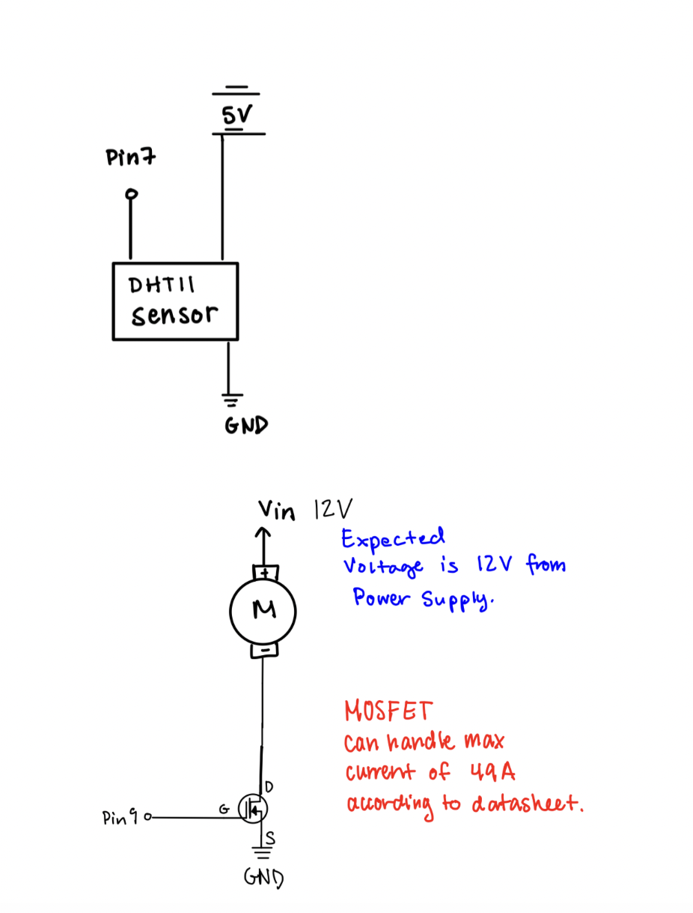
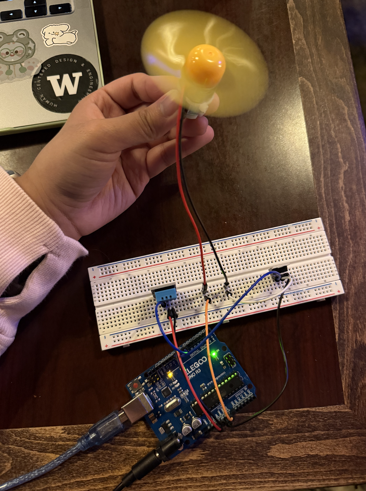
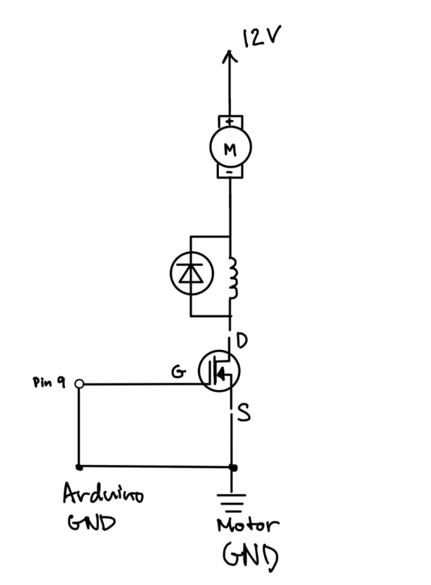
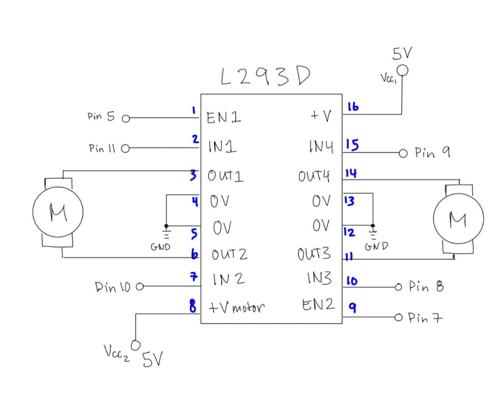
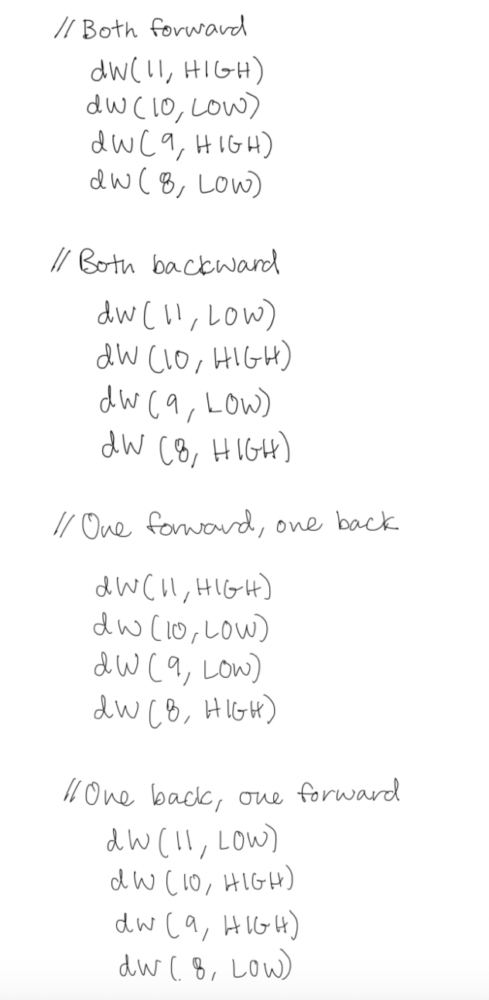

In Assignment 5, I used a MOSFET transistor and a sensor to read humidity!
Here is all the documentation for assignment 5!
Schematic:

Here is the schematic diagram I drew for this assignment.
Overview Photo:

Here is a photo of the circuit I put together, where you can see the humidity sensor, the MOSFET, and the fan that is attached to the DC motor. The fan turns on when a particular humidity above 20% occurs. Normally, I would have the humidity higher, but to visualize the fan working for this assignment, I had to lower the humidity. Normally, the fan should only power at a humidity of 90% or higher, like the type of fan that powers in a bathroom after a hot shower.
Code Snippet
//Input the library for the humidity sensor
#include <dht.h>
//Initializing sensor object for the humidity sensor
dht DHT;
//Setting up the pins to be connected to the sensor and the DC motor
#define DHT11_PIN 7
#define DHTLIB_OK 0
#define fan 11
const int mosfetPin = 9;
//Setting up the output for the MOSFET and the motor
void setup() {
pinMode(mosfetPin, OUTPUT);
pinMode(fan, OUTPUT);
//Setting up serial for debugging and to understand what values are the output for the sensor.
Serial.begin(9600);
}
//Main loop to execute function
//Function: This fan operates when the humidity is greater than 20%.
//As mentioned in the assignment, typically, I would prefer if the fan only operated at a higher humidity.
//However, for this assignment, and in the settings where I was testing this circuit, the humidity of the room was much lower,
//so I had to lower the required humidity so that I could show that the DC Motor & fan does work when the humidity sensor is able to take in a reading.
void loop() {
//Initializing the value that is to be read from the humidity sensor
int humidVal = DHT.read11(DHT11_PIN);
//Check if the value is a valid value that is read from the humidity sensor
if (humidVal == DHTLIB_OK) {
//Establish the decimal value to be read from the humidity sensor
float humidity = DHT.humidity;
//Arranging format of printed output in the Serial Monitor
Serial.print("Humidity recorded is = ");
Serial.println(humidity);
// High humidity, have the fan operate at a stronger power.
// MOSFET is turned on
if (humidity > 20) {
analogWrite(mosfetPin, 120);
analogWrite(fan, 60);
}
// Medium humidity, have the fan operate at a medium power.
// MOSFET is turned off
else if (humidity >= 10 && humidity < 20) {
analogWrite(mosfetPin, 0);
analogWrite(fan, 40);
}
// Low humidity, fan is spinning at a slower speed.
else {
analogWrite(mosfetPin, 0);
analogWrite(fan, 0);
}
} else {
//Error message printed if sensor does not work.
Serial.println("Error has occurred. Sensor value cannot be read.");
}
//3 second delay between humidity sensor readings and printed output
delay(3000);
}
Additional Questions
Question 1:
Question 1 answer: The absolute maximum amount of current between pins 2 and 3 is 47A.
Question 2:

Datasheets: DC Motor Datasheet: https://www.ti.com/lit/gpn/DRV8802 Flyback Diode DataSheet: https://www.vishay.com/docs/88503/1n4001.pdf MOSFET Transistor Datasheet: https://www.infineon.com/assets/row/public/documents/24/49/infineon-irlz44n-datasheet-en.pdf Arduino: https://docs.arduino.cc/resources/datasheets/A000066-datasheet.pdf
Question 3:


Question 4:
The only use of AI in this assignment was to assist with converting the formatting of the code snippet. There was no other use of AI for this assignment aside from formatting.